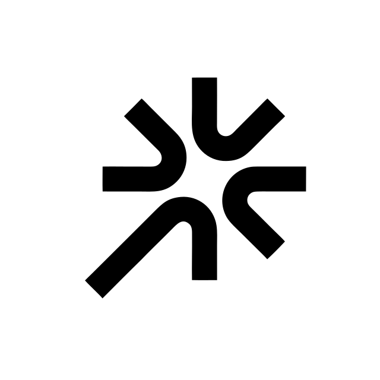
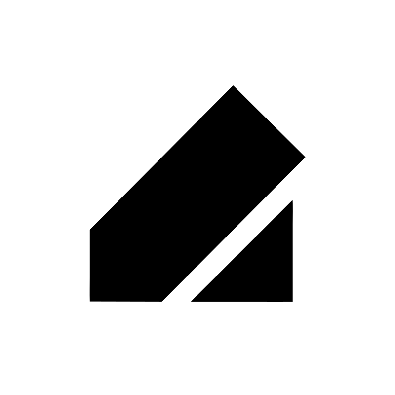
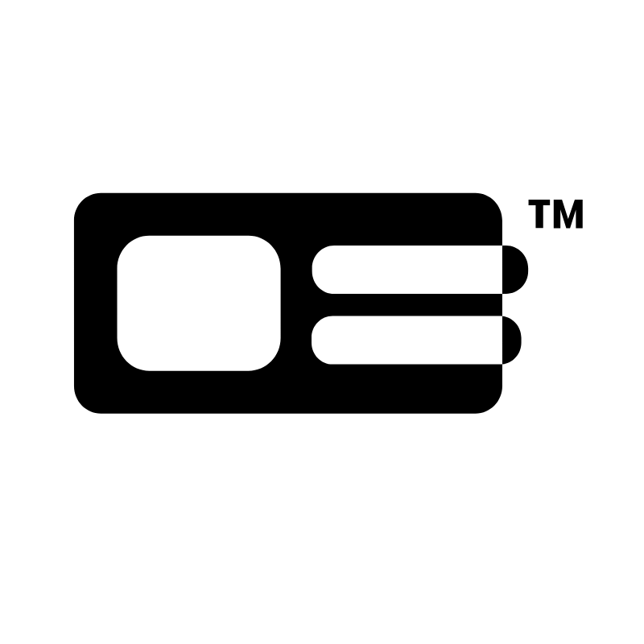
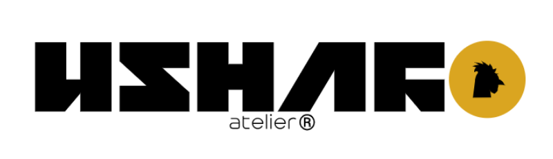
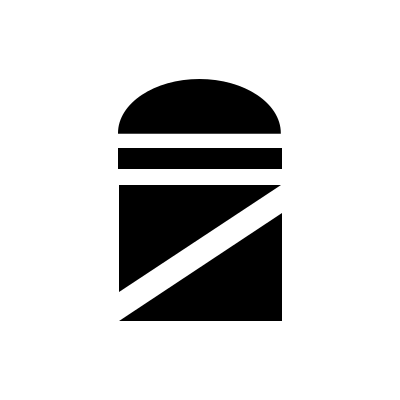

CGN | NBO
sema@freigeist.agency
freigeistagency™
when they start growing, the biggest issue most startups battle with is trust. at freigeistagency™ we have specialised in building and leveraging trust infrastructure for companies allowing them to scale sustainably.
we combine our partners' individual experience in sales, performance marketing, strategic creative direction, design, web development, communications and software shaping a full-service agency with one purpose:
to create immediate, lasting growth for your business.
we analyse where your business currently stands.
how high is your revenue? how good is your offer framing? what are currently your biggest strengths & weaknesses? what are the most lucrative future opportunities & most relevant threats?
the examination results allow us to effectively restructure your offer and sales process, corner your target audience & develop your brand & advertising strategy in a way that resonates with your target audience. this allows you to crystalise yourself from the crowd.
we execute the developed strategy for your local & online brand presence, take your sales team through our sales workshop to equip them with the skills needed to convert the new leads and drop you into your new client pool with your advertising campaigns.





our clients thrive on a framework shaped by our partners experience in different sectors of marketing, sales, software and design. at freigeistagency™ every piece works together to produce powerful client stories. we're always scouting new talent so if you have what it takes to be one of the ghosts, hit us up!
sema@freigeist.agency
freigeistagency™